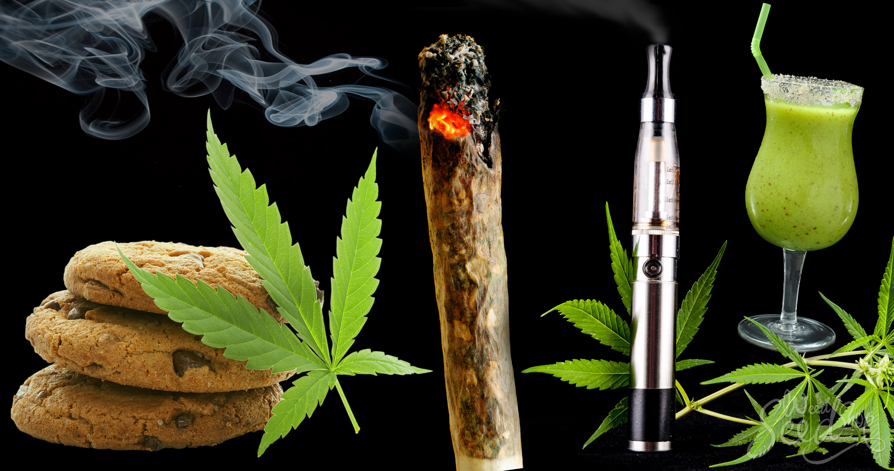

Métodos de Consumo
Existen varios métodos de consumo de marihuana, cada uno con sus propias características y efectos. Algunos de los métodos más comunes incluyen:
- Fumar: El método tradicional de consumo mediante cigarrillos o pipas. Es rápido en efectos pero puede ser perjudicial para los pulmones.
- Vaporización: Una alternativa más saludable a fumar, donde la marihuana se calienta a una temperatura que libera los compuestos activos sin quemarla.
- Edibles: Productos comestibles infundidos con marihuana. Ofrecen una duración prolongada de efectos, aunque tardan más en hacer efecto.
- Tinturas: Extractos líquidos que se pueden consumir directamente o añadir a alimentos y bebidas. Permiten una dosificación precisa.
- Aplicación tópica: Cremas y bálsamos infundidos con marihuana que se aplican directamente sobre la piel para aliviar el dolor localizado y la inflamación.